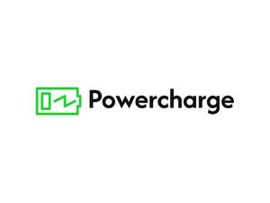

Trade Mark Journal No.2025/037 12 September 2025
UK00004221689 19 June 2025 (9)

- Class 9
- Chargers for smartphones; Smartphone battery chargers; Chargers for batteries; Battery chargers for mobile phones; Battery chargers; Battery chargers for use with telephones; USB chargers; Batteries for phones; Chargers; Mobile phone battery chargers; Wireless battery chargers; Chargers for mobile phones; Solar-powered battery chargers; Battery chargers for tablet computers; Portable chargers; Chargers for vaporizers; Earphones for smartphones; Batteries for mobile phones; Chargers for electric batteries; Solar battery chargers; Auxiliary batteries for mobile phones; Portable power supplies (rechargeable batteries); Electric battery chargers; Battery chargers for laptop computers; Battery chargers for electronic cigarettes; Fast chargers for mobile devices; Portable power chargers; Rechargeable batteries; Battery compensation chargers; USB chargers for electronic cigarettes; Batteries for use with mobile telecommunication devices; Chargers for mobile telephones; Mobile phone chargers; Foldable smartphones; Cell phone battery chargers for use in vehicles; Wireless charging pads for smartphones; Power supplies for smartphones; Wireless chargers; USB cables for cellphones; Waterproof cases for smartphones; Cell phone battery chargers; Chargeable batteries; Battery charge devices; Batteries; Mains chargers; Charging appliances for rechargeable equipment; Solar-powered rechargeable batteries; Dustproof plugs for jacks of mobile phones; Dry-cell batteries; Anti-dust plugs for charger ports; Rechargeable electric batteries; Battery adapters; Battery charging devices for motor vehicles; Power packs [batteries]; Smartphones; Battery cables; Battery charging equipment; Earphones for use with mobile telecommunication devices; USB flash drives with micro USB connectors compatible with mobile phones; Chargers for electrical accumulators; Headsets for smartphones; Vaporizer batteries; Selfie sticks used as smartphone accessories; Flash lamps for smartphones; Lithium batteries; Battery packs; Gimbals for smartphones; Waterproof smartphone cases; Rechargers for electric accumulators; Portable charging cases for electronic cigarettes and vaporizers; Chargers for electric accumulators; Wearable smartphones; Wireless headsets for smartphones; USB chargers adapted for car cigarette lighter sockets; Power supplies for smart phones; Chargers for electronic cigarettes; Straps for mobile phones; Wireless portable printers for use with laptops and mobile devices; Auxiliary battery packs; Electrical batteries; Mobile phone connectors for vehicles; Waterproof cases for smart phones; Accumulators [batteries]; Mobile telephone batteries; Terminals for batteries; Batteries for vehicles; Auxiliary speakers for mobile phones; Electric-car charger; Chargers for cell phone; Solar batteries; Power units [batteries]; Batteries for projectors; Headphones for smart phones; Anti-interference devices [electricity]; Cameras for smartphones; Lanyards for mobile telephones; Batteries, electric; Electric batteries; Wrist-mounted smartphones; Anti-dust plugs for cell phones; Wireless headsets for mobile phones; Electric charging cables; Nickel-cadmium batteries; Carrying cases for mobile phones; USB cables; Battery booster cables; Lanyards for cell phones; Devices for hands-free use of mobile phones; Electrical storage batteries; Joystick chargers; Nickel-cadmium storage batteries; Anode batteries; Batteries for lighting; Lighting (Batteries for -); Electric storage batteries; Adapter cables for headphones; Chargers for electronic smokers' articles; Volt sticks [electrical protection devices]; Batteries for electric vehicles; Electric batteries for vehicles; Batteries, electric, for vehicles; Cases for mobile phones; Car charger; Mobile phones; USB adapters; Keyboards for smartphones; Wireless headsets for smart phones; Grids for batteries; Electrical cells and batteries; Protective cases for mobile phones; Plates for batteries; Earphones; Battery boxes; Cases for smartphones; Leather cases for mobile phones; Keyboards for mobile phones.
Footprint Resourcing Limited